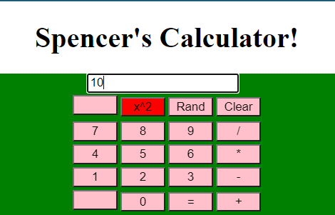

HTML/CSS/JS (and more) Projects
School and Personal projects focusing on responsive web development with HTML/CSS/JS, node.js, and React, with more frameworks
to be added in the future.
Software Projects (Python, Java, JS)
A mixture of School and Personal projects, focusing on Python and Java for Desktop app development with GUI, Server, and File Management
integration. Plus a combination of VoltBuilder and HTML/CSS/JS to create responsive desktop/mobile web apps.
Database Projects
A showcase of a working database I built in cooperation with a small group of students for our Business Database Systems class.
Plus some ERDs for other projects.
WIP Projects / Whiteboarding Phase
A place for projects I'm working on that aren't quite ready to be published yet but I'm still excited to be working on
Mentorlink application developed in collaboration with five other students for our Captsone Information Systems project.
We used an Agile approach to develop the website over the course of four, week long sprints and communicated via Slack, Trello Boards,
and Zoom meetings. We used REPL.it, an online develoment platform to give us the ability to write live code together remotely and collaborate
without having to worry about accidentally overwriting someone's work.
I was on the development side of the project, focusing on site navigation and functionality, utilizing JavaScript to enable page traversal
and updating thread posts. Each week I participated in team meetings discussing our plans for the upcoming week's sprint, and the tasks we would take on to
accomplish those goals. We utilized a Scrum framework to organize our team roles, and throughout the week our "Scrum Master" would periodically
reach out to see how we were progressing through the sprint.
One of the biggest challenges we faced during this project was doing everything remotely, as ASU still had limited campus access in the Spring of 2021 when this was developed.
Coordinating meetings, tasks, and general communication was slow-going until we started getting into the general workflow of online collaboration. Fortunately, this was our
second project I had worked on with this team, so it was a lot more seamless than the first project.
This was one of the group projects I worked on for my Capstone in Information Systems class at ASU. This was the first project I worked on with this team,
and we would later work together on building our mentoring application. This first project was completed using an Agile approach with a Scrum based framework,
and consisted of three, week-long sprints.
This project was more focused on functionality than aesthetics, as it was meant to serve as a laucnhing point for our team to work a bigger project.
I was on the development team for this project and worked on implementing administrator functionality and restaurant review features primarily using JavaScript.
Through working on this restaurant search website I learned how important it is to understand the role every member of the team plays, and pay attention to the
functionality they are implementing, in order to ensure the code remains consistent and compatible. I had to work closely with the developers working on the login
and user profiles to make sure the administrator and restaurant review features utilized the features they were working on. Thanks to this coordination and consistent use
of an updated Trello board, we were able to get our project to a presentable state that could serve as a foundation for bigger web apps in the future.
A group project I worked on with two other students for our Web Technologies class. Our goal for this project was to develop a new website for a local
business that implments various features such as integration with a mysql database to pull pricing information, a cart system that calculates total price, and a contact
with all relevant links and maps.
Investing web app that calculates investment timelines based on user input.
Utilizes HTML/CSS/JS
Web app that determines colors based on user input and slider interaction.
Simple, functioning calculator web app / helped with output testing

Java app that allows users to manage a class of students and their individual test scores. Users can select any number of quizzes they
want and the app will calculate: class average, student average, and quiz average based on the user entered data.
Java app that is an electronic device checkout system that provides features such as current rental status for an item, item search, ability to update and
delete items from the array, add new device (generates unique SKU), and more.
Employee management app that keeps track of employee information and lists all employees under a certain manager. Focuses on inheritance
as all managers inherit the traits of the employee class.
Python chat server that enables multiple clients to connect directly to the server module and communicate real time.
Mobile-first focused, web app, that connects to a sql database and allows a user to search for popular baby names based on a given
state and year, and provides the user with clean visual representation of the frequency of certain names.
Mobile app study that aimed to take advantage of the motion control on smart phones to dynamically change the screen color as the
user shakes their device.
Mobile app study that expanded on the color shake app to provide additional locational information to the user and gives the user a live graphical
representation of the data as it is being processed.
Report for a custom SQL database solution I worked on in collaboration with a group of peers for my Database class to integrate a new SQL Database
into a business that is looking for a new way to keep track of all of their data. In this case, our report was based on a Dog Grooming company,
and we had to design a database that would keep track of employee, customer, dog, and pricing information while sticking to the current format
of their business rules.